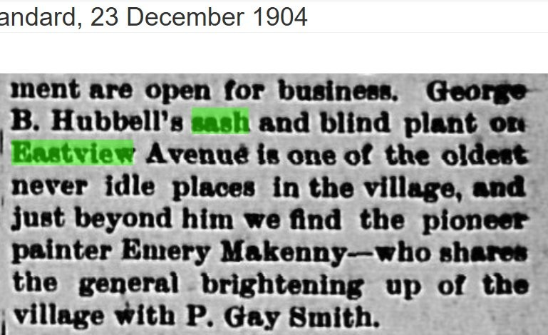
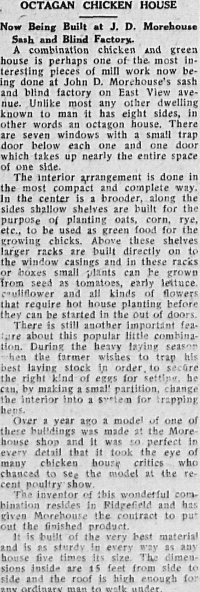
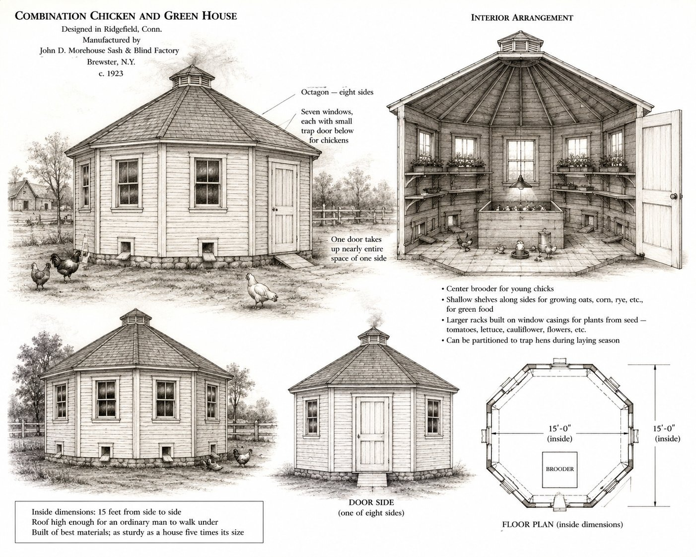
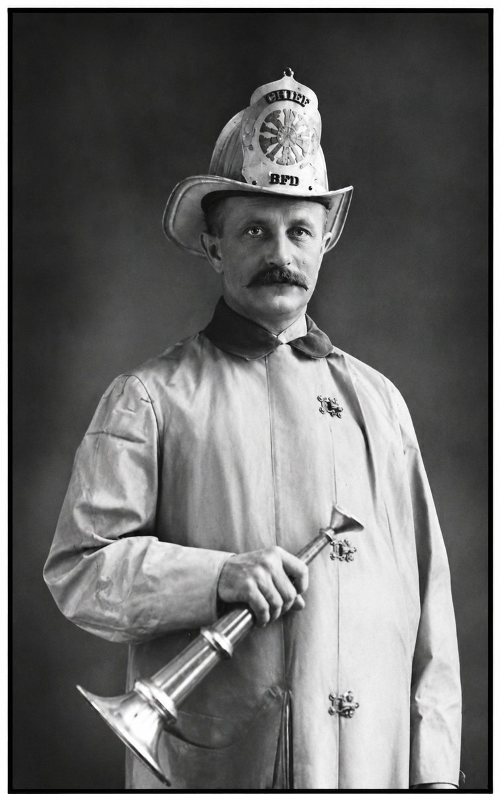
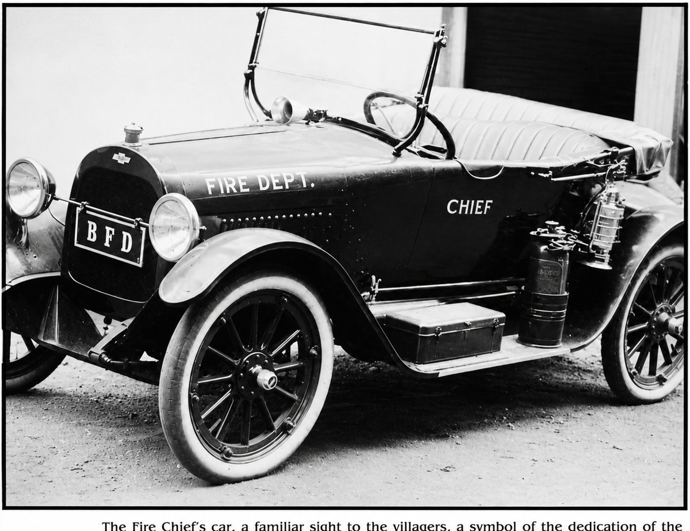

The Morehouse Factory
A sash and blind plant at the southern end of Eastview Avenue, the carpenter’s apprentice who became its second owner, and the thirty-six-year volunteer fire chief who ran both.
I. At a glance
From roughly 1889 until 1924, a sash and blind factory stood at the southern end of Eastview Avenue, on what was then the eastern edge of the Village of Brewster. For its first quarter-century the plant was the establishment of George B. Hubbell. On October 26, 1914 — six weeks after Hubbell’s death, and on his own fortieth birthday — one of Hubbell’s former workers, John D. Morehouse, bought the shop from the estate’s interim owner and ran it for the next decade. In 1924 Morehouse relocated his expanding business to a larger building near the New Haven railroad station on the north side of the village. He died in office on April 24, 1947, age seventy-two, having served thirty-six consecutive years as chief of the Brewster Volunteer Fire Department. His son J. Willard Morehouse, who had been associated with the business since about 1929, was in the shop at the time of his father’s death; the date at which the operation ceased entirely is not yet established.
![Detail of a color Sanborn fire-insurance map showing a block of the Village of Brewster. Building footprints are shaded yellow for wood-frame and blue for masonry. Streets are labeled Prospect Av., Eastview Av., and Reed. St. Andrew's Episcopal Church and St. Lawrence R.C. Church are labeled in blue. A large yellow L-shaped footprint on the south side of Eastview Avenue is labeled 'J. D. Morehouse Planing Mill & Carp. Shop'; it is highlighted with a red rectangular outline and a red arrow added by the researcher.](../images/eastview/morehouse/morehouse_sanborn_eastview.jpg)
The plant’s thirty-five-year presence on Eastview Avenue, c. 1889–1924, is the industrial spine of the street’s development. It predated nearly every residence on the avenue, gave the southern end its working character through the 1910s and 1920s, supplied finished millwork to many of the houses going up on the same street, and trained or employed several of the working men whose names appear elsewhere in the Eastview research. Throughout the same decades, Morehouse served simultaneously as chief of the Brewster Volunteer Fire Department — a position he held for thirty-six years, from 1911 to 1947.
II. Hubbell’s twenty-five years, c. 1889–1914
George B. Hubbell was born in the Town of Southeast in or about 1849, son of Henry Hubbell and Caroline Roberts. His shop — the sash and blind plant on Eastview Avenue — is documented on the Sanborn fire-insurance map of Brewster by 1893, and his 1914 obituary establishes that he had been engaged in the manufacture of doors, sash, and trim “for the past 25 years,” which would set the shop’s founding to approximately 1889. He lived on Prospect Street, a short walk north and west of the factory yard; the obituary noted that he “was rarely seen outside of his establishment.”
The shop’s standing in the village a decade before Hubbell’s death is captured in a Brewster Standard business-district roundup of December 1904, which sets it among the village’s established, steadily-running enterprises and locates it precisely on Eastview Avenue:
George B. Hubbell’s sash and blind plant on Eastview Avenue is one of the oldest never idle places in the village, and just beyond him we find the pioneer painter Emery Makenny — who shares the general brightening up of the village with P. Gay Smith.
— Brewster Standard, December 23, 1904

By 1904, then, the plant was already old enough and reliable enough to be cited as a fixture — consistent with the c. 1889 founding the 1914 obituary implies. Hubbell died early on the morning of Saturday, September 5, 1914, age sixty-four (in his sixty-fifth year), of chronic nephritis. His funeral was held at the family house on Prospect Street the following Tuesday afternoon. The Brewster Standard obituary published that week is the principal documentary source for what kind of proprietor he had been, and for the small-town directness with which the village remembered him:
For the past 25 years he has been engaged in the manufacture of doors, sash and trim and was rarely seen outside of his establishment. He enjoyed the confidence of all people. If he erred in any way it was in estimating the value of his material and services far too modestly. A very kind neighbor and a conscientious, christian gentleman was Mr. Hubbell.
— George B. Hubbell obituary, Brewster Standard, September 11, 1914
Six pallbearers carried Hubbell’s coffin from the Prospect Street house to interment at Milltown Rural Cemetery. The obituary names them: John D. Morehouse, Frank Barrett, Frank Fowler, Oscar Reed, John Hancock, and Alfred Vores. Two of those names matter for what came next. John D. Morehouse, age thirty-nine in September 1914, was the man who would buy the shop six weeks later. John Hancock was almost certainly the father (or close relative) of the Clarence Hancock who would later work alongside Morehouse in the shop and lose the tip of his right index finger to a planer in June 1922.
The choice of Morehouse as a pallbearer is the kind of small documentary fact that overturns a simpler reading of what happened next. Morehouse did not arrive at the shop in 1914 as an outside buyer with capital. He had worked there, under Hubbell, as a young carpenter. He had then left to take a position with a Patterson millwork firm. When Hubbell died, the workers and friends closest to him carried him to his grave — and one of them, within weeks, was back to take over the shop.
III. The succession, October 26, 1914
John D. Morehouse was born in Brookfield, Connecticut, on October 26, 1874, the son of John L. and Charlotte Elsenboss Morehouse. He learned the carpenter’s trade from his father. As a young man he came to Brewster to work at the Hubbell sash and blind shop on Eastview Avenue, and remained there long enough to be present as a worker for some portion of Hubbell’s last years. He left at some point to take a position with Pendleton and Townsend, a millwork firm in Patterson, commuting up the Harlem rail line from Brewster.
Hubbell’s death in September 1914 set in motion a brief two-step transfer of the shop. The proprietor’s estate sold the business to one John McQuay, who held it only briefly. Then, on October 26, 1914 — John D. Morehouse’s fortieth birthday — Morehouse purchased the shop from McQuay. He continued the work at the Eastview Avenue site under his own name. His 1947 obituary states the sequence simply: he “purchased of the late John McQuay the former Hubbel shop” on his fortieth birthday.
By February 1904 Morehouse had already married Nellie Shove, daughter of Zelous and Mary Lane Shove of Kent, Connecticut. Nellie’s father Zelous Shove was the first rural free delivery mail carrier to serve patrons of the Brewster Post Office; her cousin Levi Shove was Brewster’s postmaster in later decades. The couple lived first at the former Lyon place on East Main Street (where their son J. Willard was born), then in a cottage on Oak Street (where their daughter Ruth was born), and eventually settled in a house on Prospect Street purchased from Charles Losee. The Losee house on Prospect would later serve as the Brewster Volunteer Fire Department’s alarm center: the fire signal system was installed there, and Nellie Morehouse and other family members assisted the chief in operating it.
The shop Morehouse bought from McQuay in October 1914 he ran — under his own name, at the same Eastview Avenue address — through 1924.
The ground beneath the shop. The shop changed hands in six weeks; the ground beneath it moved on a separate and slower track, and it was never the business’s to sell. The Eastview Avenue lot was Hubbell family land, and its two halves had come to the family separately. The south strip passed from Theodocia Brundage to George Hubbell on April 1, 1887; the north strip — running along the St. Lawrence O’Toole church land — passed from the heirs of Albert Brush (Jacob H. Brush, Avery S. Brush, and Sarah E. Van Scoy) to Henry Hubbell on October 1, 1891 (Liber 70/197). George B. Hubbell was Henry’s son; he built and ran the plant on the family’s ground, while his parents held further lots on the Prospect Street side.
This is what resolves the role of John McQuay. In the land record he was not an owner of the factory ground but its mortgagee — the lender who held a mortgage on the Hubbell lots. When both Hubbell (September 1914) and McQuay (within roughly a year afterward) had died, McQuay’s widow and executrix, Mary Emma McQuay, brought a foreclosure action and bought the land in at the referee’s sale on February 29, 1916 (Liber 111/307). Title to the factory ground passed to the McQuay estate by foreclosure — not by the 1914 sale of the business. The two transfers that look at first like one event were in fact two: Morehouse bought the shop, the going concern, in October 1914, while the land beneath it remained Hubbell-then-McQuay property. He ran the plant for a decade on ground he did not own.
Mary Emma McQuay held the assembled lot through the rest of Morehouse’s tenancy, and two years after he relocated the business in 1924 she sold the cleared ground to George Ganong (1926, Liber 138/135) — the lot on which the Ganong house would stand until its 1959 move down the avenue. The land’s deeper root reaches the same bedrock as the rest of this end of Eastview Avenue: the 1891 deed into Henry Hubbell reserves its mineral rights “as expressed in a certain deed from Samuel Brewster to Albert Brush,” tying the factory ground to the nineteenth-century Brush family farm from which the By Ways corner and its neighboring lots all descend. The sash-and-blind plant, the Ganong house, and the parish school that occupies the ground today are three successive lives of a single parcel cut from one nineteenth-century farm.
One thread is left open by choice: the deed by which Theodocia Brundage acquired the south strip before 1887 has not been traced, so the south half’s descent to the Brush farm is inferred from its position rather than proved by its own recital. The north half’s descent from the Brewster–Brush land is explicit in the 1891 deed.
IV. The Eastview shop under Morehouse, 1914–1924
The newspaper record of the plant under Morehouse is unusually thick for a small village millwork operation, because the Brewster Standard reported its personnel news, its accidents, and its product introductions as ordinary local-business items. A representative snapshot is the November 19, 1920 column on the shop’s work in hand:
Morehouse’s sash and blind factory is turning out a number of rush orders for all kinds of interior trim. On the upper floor under the supervision of Robert Hall with his helper, Harry Townsend, orders for storm windows are receiving immediate and careful attention. On the ground floor Mr. Morehouse and Clarence Hancock are doing some fine cabinet work on an order for eight large book cases.
— Brewster Standard, November 19, 1920
The November 1920 column tells us several things at once. The shop occupied a two-story building with distinct workstations on each floor. Robert Hall supervised the upper floor; his helper Harry Townsend handled storm windows. On the ground floor, Morehouse himself worked alongside Clarence Hancock on custom cabinet work — eight large book cases on order for an unnamed customer. The shop’s output was no longer just sashes and blinds: by 1920 it was producing interior trim, storm windows, and finished cabinetry.
Harry Townsend’s name in the November 1920 column matters for the Eastview Avenue series. He was a son of Alvah D. Townsend of 14 Eastview Avenue, the lumber-and-paint dealer covered in a separate piece in this series. By May 6, 1921, the Standard reported that Harry had left the Morehouse shop to enter the lumber business with his father:
Walter Austin is now employed at [the] Morehouse sash and blind factory. [He] is filling the position left vacant [by] Harry Townsend who is now in [par]tnership with his father.
— Brewster Standard, May 6, 1921
The Townsend movement — from Morehouse’s shop to his father’s lumber business — is one of the small structural facts that document how tightly the building trades on Eastview Avenue were knit together. The man who bought sashes and the man who made sashes were not just neighbors; they were father and son in the same trade across two firms on the same short street.
The shop was a dangerous workplace, by the standards of any small village millworks of the period. Two industrial injuries are documented in the four years 1922–1924. On Thursday, June 22, 1922, Clarence Hancock (the cabinetmaker named in the 1920 column) lost the tip of his right index finger to a planer:
Thursday morning Clarence Hancock had the misfortune to lose the tip of the fore finger on his right hand while working at a planer in the Morehoose [sic] sash and blind factory. Clarence and his family are on the eve of departure to enjoy the summer at Peach Lake where he has recently taken a bungalow in Vail’s Grove. While the moving is in progress his finger is expected to mend.
— Brewster Standard, June 23, 1922
Hancock’s injury was the lesser of the two. The second, far worse, occurred on Monday, June 9, 1924, when Carl Ekstrom’s left hand caught in a buzz saw at the same plant. The headline on the Standard column — “Finger Losing Week For Brewster” — suggests Ekstrom’s accident was part of a wider local-industry pattern that week, not an outlier:
Carl Ekstrom employed at the Morehouse Sash and Blind Factory, was severely injured Monday afternoon when his left hand was caught in a buzz saw. The saw struck the middle finger, chewing it to ragged bits, then cut the forefinger completely off at the joint near the hand and finished by tearing the top joint of his thumb off.
— Brewster Standard, June 13, 1924
Ekstrom lost three fingers in the accident. Four months later, the same paper announced that a new and presumably safer Morehouse factory was under construction at a different site — a sequence covered in Section VI below.
The documented workforce of the Eastview shop in the years 1920–1924 includes, at a minimum: John D. Morehouse (proprietor), Robert Hall (upper floor supervisor), Harry Townsend (storm windows, departed 1921), Walter Austin (replaced Townsend, 1921), Clarence Hancock (cabinet work; injured 1922), and Carl Ekstrom (severely injured 1924). The roster preserved in the newspaper is not exhaustive — these are simply the workers the Standard happened to name in surviving columns — but it documents a working-class millshop labor force of named individuals, several of whom can be cross-referenced to other households in the village.
V. The octagon chicken house, 1923
In February 1923 the Brewster Standard ran a substantial feature on a product the Morehouse shop had just begun manufacturing under contract: an eight-sided combination chicken-and-greenhouse, designed by an inventor in Ridgefield, Connecticut, whose name the article does not give.

A combination chicken and green house is perhaps one of the most interesting pieces of mill work now being done at John D. Morehouse’s sash and blind factory on East View avenue. Unlike most any other dwelling known to man it has eight sides, in other words an octagon house. There are seven windows with a small trap door below each one and one door which takes up nearly the entire space of one side.
The interior arrangement is done in the most compact and complete way. In the center is a brooder, along the sides shallow shelves are built for the purpose of planting oats, corn, rye, etc., to be used as green food for the growing chicks. Above these shelves larger racks are built directly on to the window casings and in these racks or boxes small plants can be grown from seed as tomatoes, early lettuce, cauliflower and all kinds of flowers that require hot house planting before they can be started in the out of doors.
There is still another important feature about this popular little combination. During the heavy laying season when the farmer wishes to trap his best laying stock in order to secure the right kind of eggs for setting, he can, by making a small partition, change the interior into a system for trapping hens.
Over a year ago a model of one of these buildings was made at the Morehouse shop and it was so perfect in every detail that it took the eye of many chicken house critics who chanced to see the model at the recent poultry show.
The inventor of this wonderful combination resides in Ridgefield and has given Morehouse the contract to put out the finished product.
— “Octagan [sic] Chicken House,” Brewster Standard, February 2, 1923
Several things in this article are worth noticing. The structure was not a chicken house in the ordinary sense — it was a combination chicken-house and greenhouse, fifteen feet across, with a central brooder, shelves for raising green feed for the chicks, upper racks for starting hot-house vegetable and flower seedlings, and a removable internal partition that converted the interior to a hen-trapping station during peak laying season. It was, in effect, a self-contained year-round small-farm production unit in an octagonal wooden shell.

Morehouse did not invent it. The patent or design originated with an unnamed Ridgefield, Connecticut inventor, who licensed the manufacturing contract to the Morehouse shop. The model had been prototyped at the Eastview shop more than a year before this article ran — meaning since roughly the end of 1921 — and had been exhibited at a regional poultry show to favorable reception. By February 1923 the shop was producing finished units for sale.
The article is also worth noticing for what it reveals about the Morehouse business model. The Eastview shop in the early 1920s was not just a sash and trim manufacturer for the local building trade. It was a contract millwork operation taking specialized commissions, including patented agricultural-building designs licensed from outside inventors. The same shop that was making bookcases and storm windows for village residents in 1920 was, two years later, manufacturing patented combination chicken-greenhouses for sale to farmers in the surrounding region.
VI. The 1924 relocation
In late October 1924 — four months after the Ekstrom buzz-saw accident — the Brewster Standard reported that construction was under way on a new sash and blind factory for Morehouse at a different site:
Work on the new sash and blind factory of John D. Morehouse, which contractor Roberts, of Ridgefield, is putting up near the New England railroad station, is progressing rapidly.
— Brewster Standard, October 24, 1924
The new site was on property of the New York & New England Railroad (later the New Haven), at the north end of the village — about a mile from the Eastview Avenue building, on the opposite side of the village center, near where Brady-Stannard Motor Company would later stand on North Main Street. The contractor building the new factory was named Roberts, of Ridgefield, Connecticut — the same town from which the octagon chicken-house design had come the previous year. Whether these two Ridgefield connections involved the same person is not established from the records to hand.
The Morehouse 1947 obituary confirms the relocation:
About 1924 the Morehouse Woodworking Shop was established at its present location on property of the New Haven railroad near the Brady-Stannard Motor Company.
— John D. Morehouse obituary, Brewster Standard, May 1, 1947
The 1924 move was an expansion, not a contraction. The shop’s departure from Eastview Avenue marked the end of the industrial era on the southern end of the street, but it did not mark the end of Morehouse’s business. The new building, larger and presumably better-equipped, would house the operation for the next three decades. By the time the new plant was three years old, the Standard’s industrial-roundup column for November 4, 1927 was reporting that “all hands at the Morehouse Sash and Blind Factory are gaing [sic] at top speed,” part of an industrial boom in the village that was “never before witnessed by any of its oldest inhabitants.” A July 13, 1928 personnel note records Thomas Durkin leaving a twelve-year position at the Brewster Garage to take a job at the Morehouse shop — a useful indicator that the plant in the late 1920s was a desirable employer drawing experienced labor from other village firms.
The old Eastview Avenue building did not stand idle for long after the move. A Brewster Standard auction notice dated August 21, 1925 announced a multi-day household-goods sale “at the old Sash and Blind Factory, Eastview Ave., Brewster, N. Y.,” beginning Thursday, August 27 and continuing “each day until goods are sold.” The advertised inventory — carved dining suites, mahogany furniture, beds, rugs, pianos, sewing machines, cook stoves, a Hoosier kitchen cabinet, a Victor phonograph — was extensive, suggesting either a large estate sale or a consolidation of multiple households. The vacated mill building, in other words, was already by mid-1925 functioning as a flexible commercial space, exactly the kind of building re-use that often accompanied the relocation of small village industries during this period.
VII. The volunteer fire chief

Throughout his ownership of the shop — and for several years before — John D. Morehouse served as chief of the Brewster Volunteer Fire Department. His own obituary establishes the tenure as thirty-six consecutive years, 1911 to 1947, terminated by his death in office. He took the position at age thirty-seven, three years before he owned the shop. He held it through every year of his Eastview-era ownership (1914–1924), through the relocation, and through twenty-three further years at the New Haven-station plant. He was elected to his thirty-sixth term in 1946 and died the following April.
Morehouse was the fourth man to lead the department since its 1880 founding as Protector Fire Company No. 1; a note in the obituary issue, attributed to Ed Hancock, records that the three chiefs before Morehouse were Howard Truran, Edwin Cole, and William Losee. (The William Losee here is almost certainly the same man who served as 1st Engineer in the company’s 1886 reorganization as Protection Fire Company No. 1 — a generational link to the Losee family covered separately in the Brewster History research record.)
![The original 1880 Brewster Firehouse: a two-story yellow clapboard building with a steeply pitched roof and a tall hose-drying tower with a brick chimney. The front of the building has wide blue double doors with diagonal bracing under a small signboard. Five men in dark suits and hats stand by the doors. To the right, a single firefighter sits on a horse-drawn fire engine pulled by two white horses, with the apparatus visible in red and brass. Telegraph poles and trees in the background; this is an early-20th-century photograph, AI-colorized.](../images/eastview/morehouse/firehouse_1880.jpg)
The fire-signal system that summoned the volunteer department to alarms was installed in the Morehouse home on Prospect Street. Nellie Morehouse and other members of the family assisted the chief in operating it — meaning that in addition to running a manufacturing plant and holding office in a regional fire-chiefs association, Morehouse ran the village’s emergency-alert infrastructure out of his own front room, with his wife as on-call operator.
The structural concentration of roles deserves to be named plainly. For ten years (1914–1924), one man owned the largest commercial industrial building on Eastview Avenue, produced the finished construction materials going into the residential and institutional buildings on the same street, ran the emergency response that protected those buildings from fire, and operated the alarm system out of his own home. The arrangement is unusual enough that any account of the development of Eastview Avenue, or of small-village civic infrastructure in this period more generally, ought to register it.
![A wide group portrait of the Brewster Volunteer Fire Department, c.1920. Roughly forty men in double-breasted dark uniform coats with rows of bright buttons and peaked caps stand in two rows in a grassy clearing with trees behind them. Chief Morehouse stands in the front row, slightly left of center, in a chief's uniform and holding a brass speaking trumpet. A young boy in a matching child-sized fireman's uniform stands beside him, and a small girl in a sailor-style hat stands next to the boy. Another senior officer with a speaking trumpet stands on the far right. Sepia-toned photograph.](../images/eastview/morehouse/bvfd_firemen_c1920.jpg)
The most consequential fight of his chiefship was institutional, not operational. For most of Morehouse’s tenure the BVFD was funded by the incorporated Village alone, but Brewster’s natural service area extended well beyond the Village limits into the surrounding rural reaches of the Town of Southeast. The question of whether the department should answer calls from outside the Village — over long distances and rough roads, for residents who were not paying toward its costs — was a recurring matter for the Village Board. Henry H. Wells, who served as Village Mayor from 1935 to 1947 and who delivered the principal address at the May 1948 unveiling of the memorial plaque to Morehouse, recalled the chief’s position on that question in plain terms:
Before the people outside the incorporated Village but in the Town of Southeast began paying toward the cost of the Department and when the question came up in the Board of answering outside calls over long distances and rough roads Chief Morehouse gave us to understand a fire was a fire and if people were in trouble he was going to help them and that was that.
— Henry H. Wells, principal address at the dedication of the Morehouse memorial plaque, May 2, 1948 (printed in Brewster Standard, May 6, 1948)
Wells’s memorial address also preserved the operational anecdote that captures Morehouse’s manner at Board meetings:
I well recall his presence at our Board meetings. After he had handed in the monthly bills and the list of newly elected candidates for membership for our approval, and his request for new equipment, and his request was seldom modest, out would come “There’s just one more thing, gentlemen,” and that one more thing was a new firehouse, and I am glad today that Chief lived to see his dream come true and to enjoy this building, a debt long overdue to the firemen and the Chief from the Village Board and people.
— Henry H. Wells, May 2, 1948 memorial address
The “new firehouse” Wells refers to was opened in 1941 on Railroad Avenue, just north of where Route 6 crosses the railroad tracks; Wells (as Mayor) and Morehouse (as Chief) jointly issued the public invitation to its dedication, at which Morehouse was praised for thirty-one years of devoted service. The department also added ambulance service in September 1935 under his chiefship, and the Ladies Auxiliary was formed in 1943.

The 1947 obituary closes with what reads, in its small-town directness, as the closest the Brewster Standard would come to elegy:
There are many happy memories of Chief Morehouse; parades at home and in cities and villages within forty miles about; banquets with brother chiefs; carnivals; plans for a building which came to fruition in the new firehouse; now and then some improvement in apparatus.
— John D. Morehouse obituary, Brewster Standard, May 1, 1947
![The front-page lead of the Brewster Standard, May 1, 1947, showing the masthead and the obituary of John D. Morehouse. The masthead reads 'Brewster Standard' in Gothic type with the slogan 'Brewster, the Hub of the Harlem Valley.' Volume LXXVIII, No. 2. The obituary headline reads 'John D. Morehouse / Fire Chief Dies' with subhead 'Proprietor of Morehouse Woodworking Shop, for 36 Years Head of Brewster Volunteer Firemen, Was Well Known To Contractors and Builders and to Fire Departments In This Area.' A small portrait photograph of Morehouse in uniform appears at lower right, captioned 'Chief John D. Morehouse'. The opening paragraphs describe his death the previous Thursday night, his hospitalization since Sunday April 20, the blood-donation response, and the funeral service.](../images/eastview/morehouse/obit_19470501_column.jpg)
Morehouse died on Thursday night, April 24, 1947 at Northern Westchester Hospital, age seventy-two, after a four-day admission for “serious internal disorders which resulted in severe hemorrhages.” The obituary notes that several firemen and others had responded to a call for blood donations. His death was announced to the village by the signal of the fire siren — the same siren whose operating system had been installed in his own home. His funeral was held at the Oelker and Cox Funeral Home; the six pallbearers were all current Brewster firemen, including Thomas J. Durkin, the man who had left the Brewster Garage nineteen years earlier to work at the Morehouse plant. Acting chief in the immediate aftermath was Barney Foster, who was leading the BVFD’s response to a barn fire at the David Vail estate in North Salem within a week of Morehouse’s death.
The memorial plaque was unveiled on Sunday, May 2, 1948 at the firehouse, with delegations attending from Pawling, Croton Falls, and Mill Plains, and with Mrs. Morehouse performing the unveiling and J. Willard Morehouse expressing the family’s appreciation. Wells’s address closed with a paraphrase of Proverbs 22:1: “A good name is rather to be chosen then great riches and loving favour rather than silver and gold.”
VIII. After Morehouse
The question of what happened to the Morehouse Woodworking Shop after April 1947 is the thinnest part of the documentary record. The 1947 obituary refers to the business in the present tense as the “Morehouse Woodworking Shop” and records that the founder’s son, J. Willard Morehouse, had “been associated with his father for eighteen years” — placing his entry into the business at roughly 1929 and his tenure at the time of his father’s death at nearly two decades. The continuity at the moment of succession is therefore documented. What is not yet established is whether J. Willard kept the shop running for a long stretch under his sole management, sold it to outside proprietors, or wound it down within a short period of his father’s death. The closure date and circumstances of the second Morehouse plant remain an open research question.
What is established is that by some point in the second half of the twentieth century, neither building still functioned as a sash and blind factory, and Brewster as a whole had completed its transition away from local small-scale industrial manufacture. The southern end of Eastview Avenue, where the Hubbell shop had stood from 1889 to 1924, became fully residential and institutional. The northern village site near the railroad station, where the second Morehouse plant had stood from 1924, has been overbuilt by later development.
IX. Legacy
The Hubbell-Morehouse shop on Eastview Avenue is, in a structural sense, the reason the rest of the street developed the way it did. The earliest substantial structure on what was then called New Street was a working industrial plant; the residential development of the avenue happened around it, not in opposition to it, with employees and tradesmen building homes within walking distance of the workshop. The street’s eventual reputation as a quiet tree-lined residential corridor is a product of the late twentieth century; for its first sixty years, Eastview was an industrial street with houses on it.
John D. Morehouse’s thirty-six years as BVFD chief, his ten years as the Eastview shop’s second proprietor, his twenty-three years as the new shop’s sole proprietor, and his concurrent stewardship of the village fire-alarm system out of his own home together describe an unusual concentration of civic and economic role in a single small-town life. A separate research piece on the Brewster Volunteer Fire Department under Morehouse, drawing on the BVFD’s own institutional records, would be a natural companion to this one.
The following questions remain open and would substantially sharpen the picture:
The exact Eastview footprint. The plant is documented on the Sanborn fire-insurance maps for Brewster from 1893 onward, but the precise tax-parcel correspondence to the modern lot, the surviving above-ground evidence (foundations, retaining walls, the modern structure occupying the lot, if any), and the building’s footprint history across successive Sanborn revisions are not yet documented at the level the rest of this narrative requires.
The 1914 succession in the deed record. The two-step transfer from Hubbell’s estate to John McQuay and from McQuay to Morehouse on October 26, 1914 is established in the 1947 obituary. The corresponding deed records at the Putnam County Clerk’s office have not yet been pulled. A confirmed liber-and-page citation for each leg of the transfer would close that gap.
John McQuay. The interim owner’s identity, his role in the village, and his reason for acquiring and quickly reselling the shop are not addressed by any of the sources to hand.
The Ridgefield inventor. The unnamed Ridgefield, Connecticut inventor who designed the octagon chicken-and-greenhouse and licensed its manufacture to Morehouse is not identified in the 1923 article. A patent search or a search of Ridgefield agricultural-supply ephemera might recover the name.
The two Ridgefields. Whether the contractor “Roberts, of Ridgefield” who built the 1924 Morehouse factory was the same person as, or related to, the unnamed Ridgefield inventor of the octagon chicken house is not established.
The 1924 building’s site, in detail. The new shop’s location is described as “property of the New Haven railroad near the Brady-Stannard Motor Company” on North Main Street. The exact parcel and its modern correspondence (somewhere in the vicinity of the former Kobacker’s Market site) remain to be pinned down.
The closure of the second plant. The 1947 obituary establishes that J. Willard Morehouse had been associated with the business for eighteen years at the time of his father’s death. Whether he continued the operation for a long stretch under his sole management, or sold to outside proprietors, or wound the business down within a few years of 1947, remains unestablished.
The Brewster Volunteer Fire Department record. The 1947 obituary and the 1948 Wells memorial address would be substantially deepened by parallel review of the BVFD’s own institutional archive, if it survives. The Hubbell pallbearer detail (John D. Morehouse himself, along with John Hancock) raises the further question of how thickly the BVFD’s early-twentieth-century leadership overlapped with the village’s small-industry proprietors and workers in general — a thread the bicentennial volume’s 1880-founding roster (which includes John Hancock, Mills Reynolds, and a number of other names that recur in the Eastview research) supports preliminarily.
Sources Consulted
- George B. Hubbell, Brewster Standard, September 11, 1914. Establishes Hubbell’s birth in Southeast, age in 65th year, the 25-year tenure at the shop, the Prospect Street residence, the cause of death (chronic nephritis), and the six pallbearers (including Morehouse and Hancock). Source of the “very kind neighbor and a conscientious, christian gentleman” phrasing.
- John D. Morehouse, Brewster Standard, May 1, 1947 (Volume LXXVIII, No. 2). The principal biographical source for Morehouse: birth October 26, 1874 in Brookfield, Conn.; his father John L. Morehouse; the carpenter’s apprenticeship; the early position at Hubbell’s shop; the Patterson interval at Pendleton and Townsend; the McQuay purchase on his fortieth birthday; the 1924 relocation to New Haven railroad property; the 1911–1947 BVFD chiefship; J. Willard Morehouse’s eighteen-year tenure in the business; the home on Prospect Street purchased from Charles Losee; the in-home fire signal system; marriage to Nellie Shove; children J. Willard and Ruth; death April 24, 1947 at Northern Westchester Hospital, age 72; six firemen pallbearers (including Thomas J. Durkin); burial at Milltown Rural Cemetery. The same issue carries the side notice attributed to Ed Hancock naming the three pre-Morehouse chiefs as Howard Truran, Edwin Cole, and William Losee.
- “Firemen Dedicate Morehouse Memorial,” Brewster Standard, May 6, 1948 (Volume LXXVIII, No. 3). The memorial-dedication issue, reporting on the Sunday, May 2, 1948 unveiling of the Morehouse plaque at the firehouse. Carries the full text of Henry H. Wells’s principal address — the source for the “fire is a fire” quotation in its Village-Board context, the “just one more thing, gentlemen” firehouse-campaign anecdote, the closing Proverbs 22:1 paraphrase, and the list of delegations attending (Pawling, Croton Falls, Mill Plains).
- December 23, 1904 — Business-district roundup describing “George B. Hubbell’s sash and blind plant on Eastview Avenue” as “one of the oldest never idle places in the village,” and naming the neighboring painter Emery Makenny and P. Gay Smith. Earliest located dated newspaper reference to the plant; corroborates the c. 1889 founding and fixes its Eastview Avenue location.
- November 19, 1920 — “Morehouse’s sash and blind factory is turning out a number of rush orders for all kinds of interior trim…” Two-story shop; names Robert Hall, Harry Townsend, Clarence Hancock at work.
- May 6, 1921 — Walter Austin replaces Harry Townsend; Townsend leaves for partnership with his father (Alvah D. Townsend of 14 Eastview).
- June 23, 1922 — Clarence Hancock loses tip of right index finger to a planer at the shop.
- February 2, 1923 — “Octagan [sic] Chicken House Now Being Built at J. D. Morehouse Sash and Blind Factory.” Full feature on the combination chicken-greenhouse; identifies the inventor as a Ridgefield, Conn. resident; describes the structure’s eight-sided design, brooder, plant racks, hen-trapping partition; notes a prototype model exhibited at a regional poultry show ~1922.
- June 13, 1924 — “Finger Losing Week For Brewster.” Carl Ekstrom loses three fingers to a buzz saw at the Morehouse shop.
- October 24, 1924 — New Morehouse sash and blind factory under construction near the New England railroad station; contractor named as “Roberts, of Ridgefield.”
- August 21, 1925 — Auction notice: multi-day household-goods sale “at the old Sash and Blind Factory, Eastview Ave.,” beginning Thursday, August 27.
- November 4, 1927 — Industrial-boom roundup: “all hands at the Morehouse Sash and Blind Factory are gaing [sic] at top speed.”
- July 13, 1928 — Thomas Durkin leaves a twelve-year position at the Brewster Garage to take a job at the Morehouse shop.
- Sanborn Map Company, Brewster, Putnam County, NY sheets covering the south end of Eastview Avenue, 1893 forward. Establishes the factory’s footprint and its first dated cartographic appearance. Specific sheets cited: 1893 (first appearance); later sheets through the 1924 relocation and after, pending further review.
- The Town of Southeast 1788–1988, ed. Suzanne F. Truran, asst. eds. John J. Dunford and Priscilla A. Truran (Town of Southeast Bicentennial Commission, 1990; LCCN 89-052003). The Town’s own bicentennial volume; contains a dedicated portrait of Morehouse as fire chief, the institutional history of the Brewster Fire Department from its 1880 founding through the late twentieth century (with the 1880 founding roster, the 1886 reorganization as Protection Fire Company No. 1, the 1894 renaming to Brewster Volunteer Fire Department, the 1935 first ambulance, the 1941 firehouse, the 1943 Ladies Auxiliary), and a photograph of Chief Morehouse in full regalia and of the Fire Chief’s car. Used here for institutional corroboration; specific dates are taken from primary sources where they exist.
- Putnam County Clerk’s Office, Carmel, NY — deed liber records for the southern Eastview Avenue parcel housing the Hubbell & Morehouse plant, physically reviewed:
- Liber 70/197 — Jacob H. Brush, Avery S. Brush & Sarah E. Van Scoy (heirs of Albert Brush) → Henry Hubbell, Oct. 1, 1891. The factory lot’s north strip (148½ × 60, along St. Lawrence O’Toole). Reserves mineral rights “as expressed in a certain deed from Samuel Brewster to Albert Brush” — anchoring the ground to the nineteenth-century Brush farm.
- Liber 111/307 — William L. Rumsey, Referee → Mary Emma McQuay, Feb. 29, 1916. Foreclosure sale (McQuay estate v. Haight et al.), $3,000; conveys the two Hubbell strips that make up the factory lot. Establishes that the land came to the McQuays by foreclosure, with John McQuay the mortgagee rather than an owner.
- Liber 138/135 — Mary Emma McQuay → George Ganong, July 27, 1926. Conveys the cleared factory lot, carrying the parcel from its industrial life into its life as the Ganong house lot.
- Recited but not pulled: Theodocia Brundage → George Hubbell, Apr. 1, 1887 (south strip; 111/307’s book/page citation for it is in error and the deed is to be located by index).
- Putnam County Tax Map and GIS, for the modern parcel correspondence to the historical factory footprint.
- 14 Eastview Avenue (Townsend) — Alvah D. Townsend, lumber and paint dealer; father of Harry Townsend, employed at the Morehouse shop until May 1921, when he left to enter the lumber business with his father. The cross-link is documented in the May 6, 1921 Standard notice.
- Charles Losee — sold the Prospect Street home to John D. and Nellie Morehouse; cross-reference to the Losee family research piece on this site.
- This piece is one of a set on Eastview Avenue, Village of Brewster. The images above are period materials in the public domain or photographs from the author’s own holdings; the octagon chicken-house reconstruction is labeled as a conjectural visualization where it appears. Claims are graded by evidence status — confirmed primary source, period account, or inference. See the project methodology for the disciplines that govern publication.
Research by Rob G. · Eastview Avenue Series